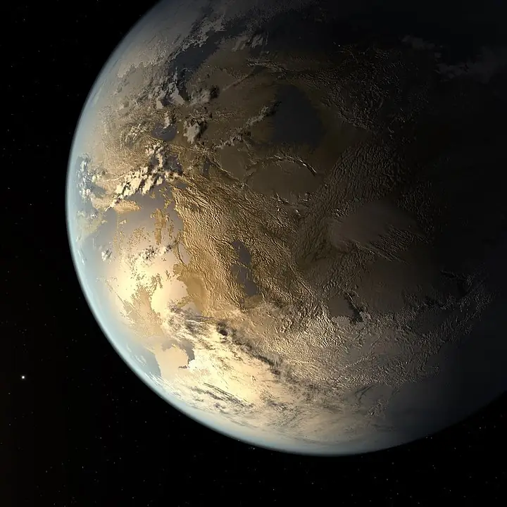

Kepler‑186 f — Exoplaneta

Introdução e História
Kepler‑186 f é um exoplaneta que orbita a estrela Kepler‑186, uma estrela anã vermelha localizada a cerca de 500 anos‑luz de distância na constelação do Cisne.
Ele foi anunciado em 2014 como o primeiro planeta de tamanho semelhante ao da Terra detectado na zona habitável de outra estrela, graças aos dados do telescópio espacial Kepler da NASA.
Características Físicas: Massa, Tamanho e Órbita
Kepler‑186 f possui um raio estimado em cerca de 1,1 vezes o da Terra, indicando que é um planeta rochoso ou semelhante em dimensão ao nosso planeta.
Ele completa uma órbita ao redor de sua estrela em aproximadamente 129,9 dias terrestres, recebendo cerca de um terço da energia que a Terra recebe do Sol.
Sua massa exata não é conhecida, mas estimativas sugerem que poderia ser comparável à terrestre dependendo de sua composição.
Potencial de Habitabilidade
- Zona Habitável: O planeta orbita dentro da zona habitável teórica de sua estrela — a região onde, em teoria, água líquida poderia existir na superfície.
- Atmosfera Desconhecida: Ainda não há dados confirmados sobre sua atmosfera ou superfície real, deixando sua capacidade de abrigar vida incerta.
- Energia Estelar Reduzida: Por receber menos energia do que a Terra, ele pode precisar de uma atmosfera mais densa para manter temperaturas temperadas.
Curiosidades
Kepler‑186 f faz parte de um sistema com outros quatro planetas menores que orbitam a mesma estrela.
Antes de sua descoberta, outros mundos na zona habitável já haviam sido detectados, mas nenhum com um tamanho tão semelhante ao da Terra quanto Kepler‑186 f.
Todas as imagens conhecidas desse planeta são ilustrações artísticas, pois não existe fotografia direta de sua superfície ou atmosfera.
Origem do Nome
O nome “Kepler‑186 f” segue a convenção astronômica científica: é formado pelo catálogo da estrela hospedeira (Kepler‑186) seguido de uma letra (“f”) que indica a ordem de descoberta dos planetas no sistema.
Referências
- Wikipedia. Kepler‑186f. Disponível em: https://pt.wikipedia.org/wiki/Kepler-186f. Acesso em: 28 dez. 2025.
- NASA. Kepler-186f — Exoplanet Exploration / NASA Science. Disponível em: https://science.nasa.gov/exoplanet-catalog/kepler-186-f/. Acesso em: 28 dez. 2025.